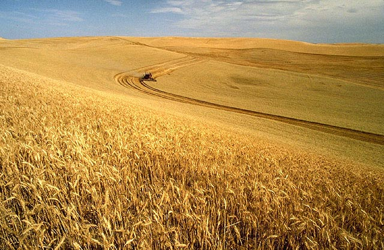

Crop

The agricultural land of Mongolia is 30173.5 thousand hectares, of which 217.6 thousand hectares is for crop production. The main grains of crop production are cereals, potatoes, vegetables and fodder. In 2003, production of cereals increased by 31.2 per cent, potatoes by 58.7 per cent, vegetables by 53.1 percent and fodder by 77.2 per cent. The production of cereals may have increased in 2003 but it is still only expected to meet 36 per cent of domestic demand. Only 497,000 ha of arable land are being used at present, but production has increased showing that intensive farming methods are developing.